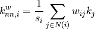
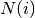
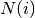
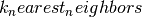

k_nearest_neighbors¶
- k_nearest_neighbors(G, source='in+out', target='in+out', nodes=None, weight=None)¶
Compute the average degree connectivity of graph.
The average degree connectivity is the average nearest neighbor degree of nodes with degree k. For weighted graphs, an analogous measure can be computed using the weighted average neighbors degree defined in [R141], for a node
 , as:
, as:
where
 is the weighted degree of node ,
is the weighted degree of node ,
 is the weight of the edge that links and
is the weight of the edge that links and  ,
and  are the neighbors of node .
,
and  are the neighbors of node .Parameters : G : NetworkX graph
source : “in”|”out”|”in+out” (default:”in+out”)
Directed graphs only. Use “in”- or “out”-degree for source node.
target : “in”|”out”|”in+out” (default:”in+out”
Directed graphs only. Use “in”- or “out”-degree for target node.
nodes: list or iterable (optional) :
Compute neighbor connectivity for these nodes. The default is all nodes.
weight : string or None, optional (default=None)
The edge attribute that holds the numerical value used as a weight. If None, then each edge has weight 1.
Returns : d: dict :
A dictionary keyed by degree k with the value of average connectivity.
See also
neighbors_average_degree
Notes
This algorithm is sometimes called “k nearest neighbors’ and is also available as .
References
[R141] (1, 2) A. Barrat, M. Barthélemy, R. Pastor-Satorras, and A. Vespignani, “The architecture of complex weighted networks”. PNAS 101 (11): 3747–3752 (2004). Examples
>>> G=nx.path_graph(4) >>> G.edge[1][2]['weight'] = 3 >>> nx.k_nearest_neighbors(G) {1: 2.0, 2: 1.5} >>> nx.k_nearest_neighbors(G, weight='weight') {1: 2.0, 2: 1.75}